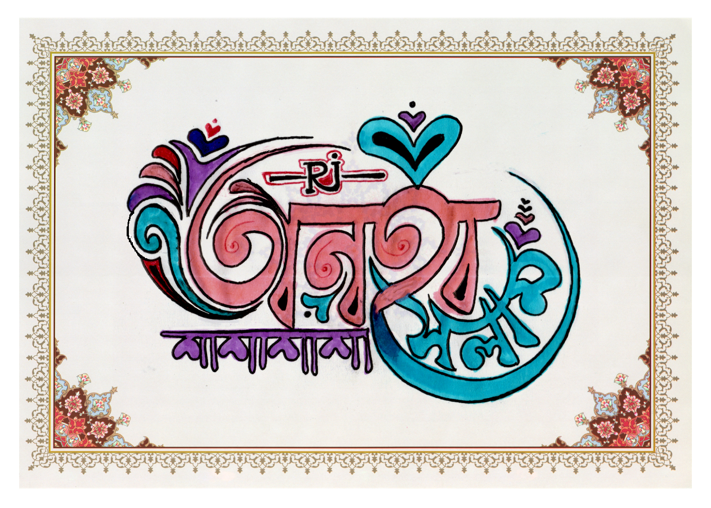

হুট করে একেবারেই অনাকাঙ্ক্ষিত ভাবে স্বর্গ পরীর মত এক মায়াময়ীর আবির্ভাব ঘটল আমার জীবনে, যাকে কোনোদিন
দেখিনি, কেবল শুনেছি।
আর তাতেই সে তার বাচন মহিমায় আমাকে এতোটাই কোপকাত করল যে, প্রথম ধাক্কায় পৃথিবীটা কিছু ক্ষণের জন্য থমকে
দাঁড়াল। তার ঠিক
পরক্ষণের অনুভূতিগুলো অবর্ণনীয়। এ কী শুনছি আমি! এ কোনো হুর-পরির কণ্ঠস্বর নয় তো! এতো মিষ্টি আওয়াজ তো জীবনে
কখনো কর্ণপাত
করিনি! এ যেন অমৃত সুধার চেয়েও মধুর কিছু। তাকে আশীর্বাদ বলবো, না অভিশাপ। তা নিয়ে এখনো মন-মগজের দোটানা।
অবশ্য আশীর্বাদটাই
প্রাধান্যের দাবিদার। কারণ আমার বয়স হয়েছে। আর এই বয়সে সব ছেলেদেরই মেয়ে দেখলে কেমন জানি কাতুকুতুর মত
অনুভূত হয়। আমি তো আর
নপুংষ নই। কিন্তু যেদিন থেকে সে আমার হৃদয়ে বিরাজমান। সেদিন থেকে বাকি মেয়েদের বড়ই তুচ্ছ মনে হয়! হোক না সে
বিশ্ব সুন্দরী।
আমি মাঝে মধ্যে নামাজ কামাই দিতাম। বিশেষ করে ফজরটা প্রায়ই কাজা হতো। কিন্তু যেদিন থেকে তাকে আড়াল থেকে
দেখা। সেদিন থেকে আমি
আল্লাহর কাছে প্রতিজ্ঞাবদ্ধ। যদি আমার মনের মানুষটা কে অন্তত বন্ধু হিসেবে হলেও পাই, জীবনে কোনোদিন পাপাচারে
লিপ্ত হবো না।
আমি আমার প্রতিজ্ঞায় অটুট ছিলাম, আল্লাহ পাকের ইচ্ছায় অন্তত কিছুটা হলেও তার সান্নিধ্যে ধন্য হয়েছিলাম।
কিন্তু আমার পোড়া
কপালে তা আর সয় কী করে! তবে আমি আশাবাদী। যদি মন থেকে চেয়ে থাকি তবে একদিন হয়তো পেয়ে যাব। উড়ে এসে মানসের
প্রতিটি পরত জুড়ে
কেমন করে বসে গেলো কোথাকার সেই মায়া পরী। যার ঠিকানা যানা নেই। তবু তার সত্তা প্রতিটি ক্ষণে আমায় টানে। ঠিক
জন্মভূমির মত,
বরঞ্চ তার চেয়ে কয়েক গুন বেশি। অভিজ্ঞতা থেকে জানি। যাদের কণ্ঠে মাধুর্য বেশি, তাদের বাহ্যিক রূপে অতটা
মাধুর্য খুবি কম হয়।
আল্লাহ পাক সবাইকেই একটা কমপ্লিট প্যাকেজ হিসেবে গড়েন। একদিকে কম হলে অন্যদিকে বেশি। তাঁর বাহ্যিক কোনো
কিছুর সাথে আমার কোনো
লেনাদেনা নেই। যদি সে কালো হয় তবে সে কালো আমার অন্ধকার জীবনের আলো। আমার অন্ধকার কবরেরও আলো! যদি সে অন্ধ
হয় তবে আমি হতে
চেয়েছিলাম তার নয়নের আলো। যদি সে পঙ্গু হয় তবে মাথায় করে সারা জীবনের জন্য রাখতে চেয়েছিলাম তাকে। সে বলেছিল
সে নাকি জান্নাতে
যেতে চায়। আমি বুঝিনি ইমোর ফ্যান-ফোলোওয়ার নিয়ে সে কী করে জান্নাতে যাবে। বুঝতে চেয়েও ছিলাম, কিন্তু আমি যে
সে সৌভাগ্য নিয়ে
জন্মাই নি। সে এও বলেছিল জান্নাত পাওয়াটা নাকি অতো সহজ না। কথাটা একেবারেই বাস্তব, তবে তার মত কেউ পাশে
থাকলে জান্নাত আমার
জন্য বায়ে হাত কা খেল। যেন সে ই আমার জান্নাত। আমি আমার প্রতিজ্ঞায় এখনো অটুট। আর কতদিন থাকতে পারব জানিনা।
অভিশপ্ত শয়তানের
সাথে আর কতদিন একাকী লড়তে পারবো জানিনা।
অন্যদিকে তাঁর ভাবনা গুলো প্রতিনিয়তই বুকের বাঁ পাশে দংশায়। তাঁর অবহেলা বুকের ভেতর ডানা ভাঙা পাখির মত
ঝাপটায়। তাঁর স্মৃতি
গুলো আমায় প্রতিটি মুহুর্তে কাঁদায়। মনের মণিকোঠার সর্বোচ্চ শিখরে যে আসীন, তাঁর অবজ্ঞা সওয়া কী যে দায়! যখন
বাঁধ ভেঙে যায়।
তখন এমন জায়গায় লুটিয়ে ফুঁপিয়ে মনের সমস্ত আবেগ অশ্রু দিয়ে ধুয়ে ফেলি। যেখান থেকে রেস্পন্ড পাওয়ার আশা
ইমানের দাবী। সেটা
প্রত্যক্ষ বা পরোক্ষ। হয়তো সে অন্য কারো সাথে সুখী। যদি তাই হয়, তবে তার সুখে ভাগ বসাতে কখনই চাইব না। অন্তত
দুখের অংশটুকু
তো সে আমায় দেবে! এই পোড়া কপালে অন্তত এইটুকুই নাহয় বেঁচে থাকার অবলম্বন হবে। সে বলেছিল, তার জীবনে নাকি
অনেক পেরেশানি। যদিও
তা জানার অধিকার আমি নগণ্যের নেই। তবু যদি সুযোগ আসতো, তাকে একটা মহৌষধ বাতলে দিতাম। আমার ক্ষেত্রে যা
প্রায়ই কার্যকরী।
আল্লাহ পাকের ওয়াদা। ৫ ওয়াক্ত নামাজ যে সময় মতো আদায় করবে। তাকে ৫টি পুরষ্কারে ভূষিত করা হবে। তার মধ্যে
সর্বপ্রথমটি হচ্ছে
ইহ-পর কোনো কালেই তার কোনো পেরেশানি থাকবে না। বাকি যাই হোক, আমি তো আর এখানে কলম নিয়ে ওয়াজ করতে বসিনি।
অয়াজ সকলেই কম বেশি
জানে। কিন্তু মানতে গেলে অবলম্বন লাগে। আমার সে অবলম্বন টুকু হয়তো হারিয়ে গেছে। মুখেও জোর নেই আমার। জন্মের
পরে বাসায় সিলেটী
আর বাইরে এরাবিক বলে-শুনে অভ্যস্ত। বাংলা কথা আটকে যায়। কলমেও অতো ধার নেই। লিখে মোটেও অভ্যস্ত নই। কিন্তু
তার ভাবনাগুলো যেন
আমায় রীতিমতো ঔপন্যাসিক বানিয়েই ছাড়বে। হয়তো বাকি ক'টা দিন এই অবলম্বনটুকু নিয়েই বাঁচবো।


প্রিয়!
আমি নগণ্যের এই বিরক্তিকর অগোছালো কথাগুলো যদি আপনার দৃষ্টিগোচর হয়। যদি পড়ার মত একটু
সময় হয় আপনার। তবে
বলবো, যেদিন
থেকে আপনাকে দেখেছি সে দিন থেকে আমার জীবনটা অদ্যাবধি থেমে আছে। যদিও আপনাকে চর্মচক্ষে দেখিনি, কিন্তু একটি
মুহূর্তের জন্যে
আপনাকে মনের আড়াল করতে পারছিনা। আমি আর পারি না। আমি ব্যর্থ, আমি পরাভূত, আমি অপারগ। কেন এমন হচ্ছে আমার সাথে!
কী যাদু আছে
আপনাতে? একটু যদি বলতেন আমায়। হয়তো এটা আমার দুর্ভাগ্য। আপনার সাথে সরাসরি কথা বলার সাহসটাও এখনো যোগাতে পারছি
না। তাই গানে
গানে মনের কথাগুলো শেয়ার করার চেষ্টা করেছি। আপনাকে বিরক্ত করেছি। ক্ষমা করে দেবেন। কী সৌভাগ্য আমার! যার জন্য
চুরি করি, সেই
বলে চোর। প্রিয়! আপনাকে ভুলে থাকার হাজারো ব্যর্থচেষ্টার পর আমি পরাজিত, আমি ক্লান্ত, পরিশ্রান্ত, আমি নিরুপায়,
আমি বড়ই
অসহায়! জানেন! আমার নানুবাড়ী জাফলঙে। জায়গাটা সম্পর্কে আপনার কিঞ্চিৎ হলেও ধারনা আছে। দুর্গম পাহাড়ি এলাকা,
নেটওয়ার্ক আউট অফ
রিচ। অন্তত এই বাহানায় হয়তোবা কিছুটা দূরত্ব পয়দা হবে। এই ভেবে গিয়েছিলাম বেড়াতে। তা ছাড়া সেখানে আমার তিনটা
কাজিন্স আছে।
অনিন্দ্য সুন্দরী। দুধে আলতা গায়ের রং। তন্মধ্যে একটাকে আমি মনে মনে পছন্দও করতাম। এখনো তার টেক্সট আমার
ইনবক্সে ঝুলে
আছে। ঠিক যেমন আমার টেক্সটগুলো আপনার ইনবক্সে থাকতো। কিন্তু কী দুর্ভাগ্য আমার! ওদের সাথে এক টেবিলে খাবার খেতে
বসেও আমি
আপনার কথাই ভেবেছি। নেটওয়ার্কের খোঁজে রাতের অন্ধকারে খোলা আকাশের নিচে গিয়ে হলেও চুপটি মেরে আপনাকে একটুখানি
শুনেছি। অনেক
কষ্টের পর সাজানো ক্যারিয়ার প্ল্যানটাও প্রায় ছেড়ে দিয়েছি। আপনার জন্য সব ছেড়ে দিয়ে আমি নিঃশেষ হয়ে যাবো। তবু
আপনাকে
কোনোদিনও ভুলতে পারবো না। কী করে ভুলতে পারব! যে দিন আপনার সাথে প্রথম কথা হয়, তার আগের দিন রাতে স্বপ্নে আমি
আপনার লাস্ট সীন দেখেছিলাম। আপনি বলেছিলেন, আপনার মনটা নাকি মরে গিয়েছে, হয়তো একবার মরেছে। কিন্তু আমার মনটা
প্রতিনিয়ত ধুঁকে ধুঁকে মরছে। আপনার বুকের সেই মরা জমিনে প্রাণের সঞ্চার করার একটা সুযোগও কি পাবনা! আমি সেই জমিন
ফুলে ফুলে ভরিয়ে
দিতে চাই।
সেই ফুল বাগানের মালী হতে কি দেবেন না আমায়! প্রিয়। আমি আপনাকে সাথে নিয়ে জান্নাতে যেতে চাই। কী রাখা আছে ইমোর
ঐসব
ঝক্কি-ঝামেলায়? আপনার মনে নেই! আমি বলেছিলাম। এখানে যারা আসে, একটাও আপনার লেভেলের না। কথাটা কি ভুল ছিল?
দুনিয়াটা এরকমই
প্রিয়। আপনি যাকে সবচেয়ে কাছের বলে মনে করবেন, তার স্বার্থের ঊর্ধ্বে গেলেই সে আপনাকে ছুঁড়ে ফেলে দেবে। আমার
নিজের বড় ভাইও
আমাকে স্বার্থ ছাড়া দেখে না। প্রিয়নবী (স) ও স্বার্থপর ছিলেন!
আমিও আপনাকে স্বার্থের জন্যই ভালবাসি! চলেন না দু'জনে হাত ধরাধরি করে জান্নাতের পথ সাজাই। আমি একা পারবো না।
হায়! এই কথাগুলো
যদি আপনাকে বলে শোনাতে পারতাম, তাহলে হয়তো আমার আবেগী মনের বাঁধ ভাঙা আর্তনাদগুলো বোঝতে সুবিধা হতো । ইদানীং
আরেকটা ভয় এসে
উঁকি দিচ্ছে। যদি আপনাকে হটাৎ একদিন খুঁজে না পাই। কী হবে আমার। প্রতিরাতে ফুঁপাতে ফুঁপাতে আমার আবেগগুলোও
ফুরিয়ে
আসছে।
নামাজেও মন বসছে না। অবশ্য আমি আশাবাদী হয়তো আল্লাহ আপনার চেয়ে আরো ভাল কিছু দেবেন। কিন্তু আমি সন্দিহান, সে ভাল
দিয়ে কী
হবে! যে ভালতে আপনিটাই নেই। যে ছেলে না খেয়ে মরে যাবে, তবু আল্লাহ বাদে কারো কাছে কখনো হাত পাতবে না কারণ সে তার
জীবনের
চেয়েও বেশি তোয়াক্কা করে তার ইজ্জতের, তার আত্মসম্মানের। সেই ছেলে আজ করজোড়ে মিনতি করছে। দয়া করে আমার ভাঙা মনটা
কে
চূর্ণবিচূর্ণ করে দেবেন না। আমার অতি কষ্টের সাজানো কেরিয়ারটাকে ধ্বংস করে দেবেন না। আমার জীবন্টাকে নষ্ট করে
দেবেন না।
প্লি-জ আমার ভাঙা হৃদয়টাকে ভস্ম করে দেবেন না। আপনাকে ছাড়া আমি বাঁচবো না, ব্যাপারটা ঠিক তা নয়। কারণ আমি এই
সাময়িক জীবনের
কষ্টের চাইতে চিরজীবনের কষ্টকে অনেক বেশি ভয় পাই। তবে! আপনার বিরহ হৃদয়ের গভীরে যে ক্ষত তৈরি করে, আমার মন বলছে,
আমি হয়তো বেশি
দিন বাঁচব না, অচিরেই হৃদরোগে আক্রান্ত হয়ে মারা যাব। ভাবছেন বাড়িয়ে বলছি। যদি একটি কথাও বাড়িয়ে বলে থাকি। তবে
যেন তাই হয়।
যতদিন বেঁচে থাকবো, আপনি যতই দূরে ঠেলে দিন না কেন। আমি আবার ফিরে আসবো আপনারই কাছে। আমার জান্নাতটা ভিক্ষা চেয়ে
নিতে।